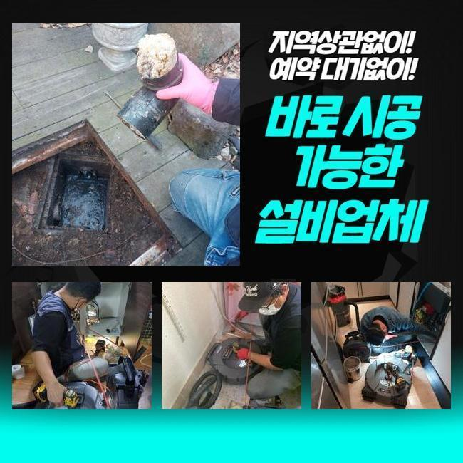
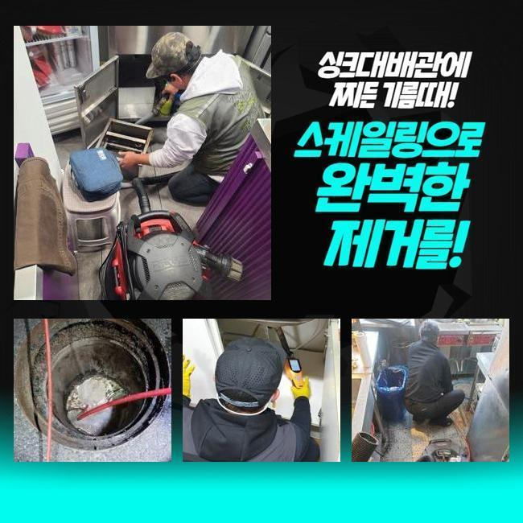
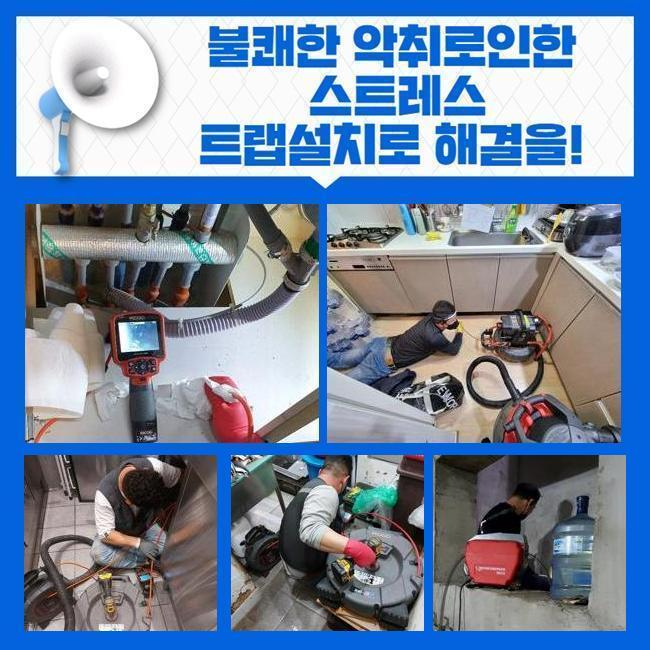
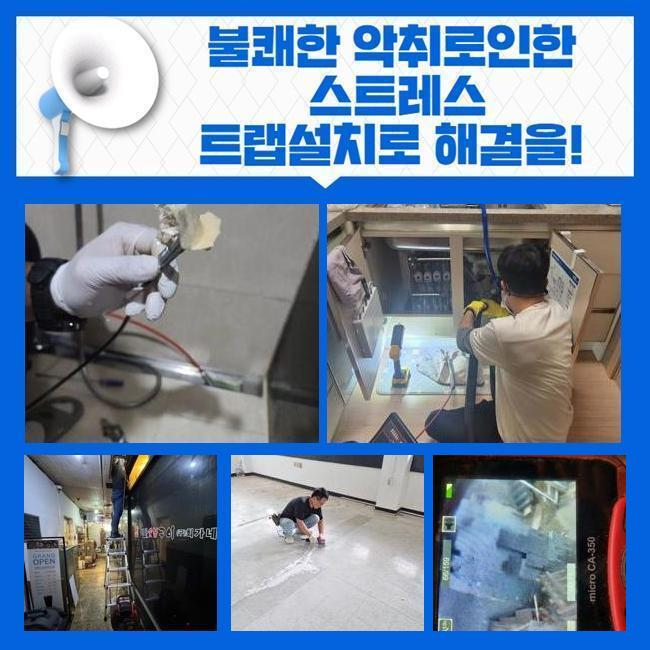
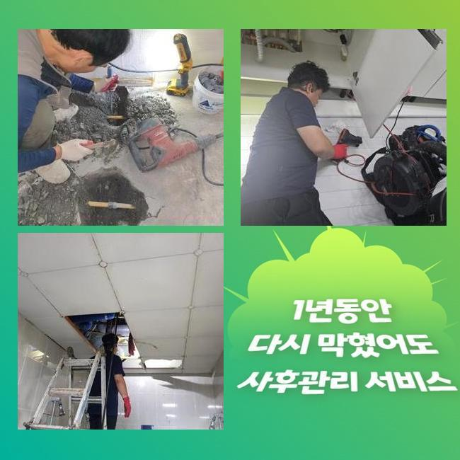
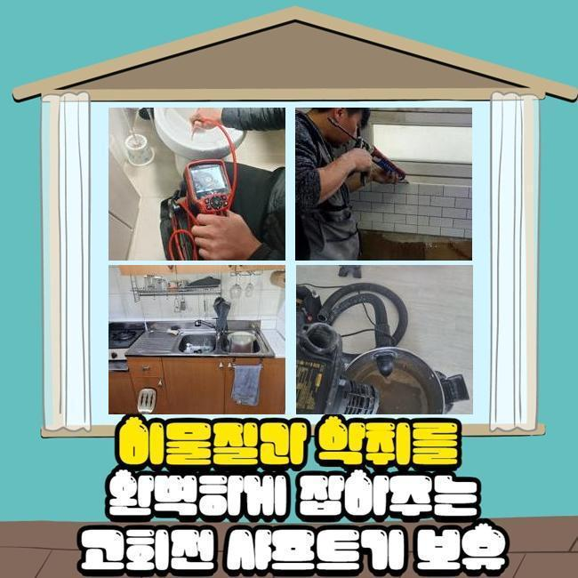

🏠 해운대구 하수구막힘 하수도고압세척 화장실변기막혔을때샴푸 배수구냄새
용인 변기막힘 전문 시공 후기

📋 작업 개요
- 위치: 용인
- 서비스 유형: 변기막힘, 하수구막힘, 배관막힘, 누수수리, 역류해결, 뚫는업체, 배관청소, 고압세척
- 작업 일시: 2024. 11. 12. 0:05
- 업체명: 하수구수사대 (010-5615-2118)
🔍 문제 상황
해운대구 하수구막힘 하수도고압세척 화장실변기막혔을때샴푸 배수구냄새
하수들이 솟구친다면 서둘러 해결하는것이 우선이겠는데요
하수관이 막혀버리는 연유는 여러방면으로 뻗어있는데 그 가운데 가장 흔한 연유는 기름으로 생긴 흡착물과 식재료의 찌꺼기들입니다
기름성분들은 시간들이 흘러가며 하수도에서 굳게된 뒤 점성이 있는 오염원을 형성시키는데요
오염원이 하수도에서 퇴적되며 하수의 통로들을 막아섭니다
현장에 내방하니 배관 밖으로 솟구치게 된 오염물이 고인 상태였고 기름성분까지 역류되어버려서 위생적인 측면도 고려해야했습니다
슬러지들은 음식물의 오일들이나 식재료를 다루실때 빠지는 잔해물이 원인인 경우가 많아요
기름성분이 하수관으로 내려가게되면 심층부에서부터 엉키게되면서 진득한 덩어리들을 형성시키는데요
이러한 상황은 유수를 방해하며, 하수관에서 빠지는 잔재들을 끌게해 하수관을 정체상태로 만들어냅니다
석션기기를 사용해주어 물들을 빨아당기고 잔해들도 빨아당겼어요

🔎 원인 분석
💡 전문가 진단: 정밀 진단 장비를 사용하여 슬러지의 고착 여부를 판명하고 타격/세척 작업을 실시했습니다.
석션으로 말씀드리자면 압차를 사용해 물과 잔재들을 제거시키는 장치로 하수관 세척에 자주 이용됩니다
오수를 빨아당기고 배수관의 컨디션을 관찰하기 위하여 내시경을 이용했는데요
내시경을 소개하자면 내부모습을 확연하게 비추는 장치로 원인부분과 스팟을 정확히 체크해볼 수 있게 하죠
슬러지들의 형상과 점성이 있는 컨디션을 보니 샤프트장비 외에 조속히 시정이 진행되는 전동스프링기를 운용해주었습니다
샤프트장비는 머리쪽에 체인이 부착된 장비들로 단단해진 잔해들을 제거시킬 때 사용한답니다
그러나 이같은 증상일 땐 스프링기기를 이용하는게 좋을거란 판단을 내렸어요
스프링기기를 이용해 하수관의 정체를 뚫어내니 수위들이 빠지는것을 확인했어요
솟아버린 이물은 아직 남아있어서 세척까지 진행시켜야했고 흡착물들 또한 통수를 시켜 걸러주어 제거시킬 목적이였는데요
역류해버린 잔해는 음식찌꺼기라던가 기름성분 노후된 부속품도 존재했어요
이러한 이물은 배수관에서 흐르지 못함과 동시에 켜켜히 쌓입니다
배수관청소를 할 땐 물리적 힘을 사용하는 방식과 중화제 등을 이용하는 방법들을 써야되겠습니다

🔧 작업 과정
의뢰자는 음식업소를 운영해오던 상황이였고 오일류가 함유된 음식들을 다루는 시설로서 배수관으로 오일들이 많이 누적된 형상을 띄고 있었는데요
고객분께 그릇들을 닦으실 때 어떠한 절차로 진행되는지 여쭤보았더니 잔반들을 개수대에 담아주고 물을 흘려보내 따로 폐기하여 설거지들을 진행한다 전해주셨는데요
위와같이 진행할 시 음식물에 존재하는 오일들이 관로로 흘러간다고 일러드렸습니다
주방 이용 시에 기름성분들은 따로 버린 후 하수관으로 투입되지 못하게 이용해주는게 합리적이라고 안내했습니다
관로로 기름들이 빠지면 이 오일류들이 출수지점까지 흐르지 못하게 되고 관로내측에서 빠지다가 어느 한 지점에서 뭉치면서 단단하게 변모해요
슬러지들에 여타 이물들과 섞임과 동시에 엉키면서 부패로 이어져 슬러지 상태의 오염물이 형성되게 됩니다
슬러지 이물은 하수도를 좁히게 해 구간마다 막히게 함과 동시에 냄새들도 야기시켜 기온이 올라가면 벌레들을 생기게 해요
그렇기에 슬러지형 이물이 생길 수 없게 관리하는게 중요하겠습니다
하물며 통로가 협소해질 시 하수가 안내려가 압력상승이 이뤄지게 되고 역류증세가 생겨나 이물질과 기름뭉치들이 솟구쳐 주방공간을 오염시키게됩니다
관로에서 제거시킨 이물의 경우 내부에서 산패했고 악취들도 심각했어요
그릇세척을 하신다거나 시설 청소를 할때에 찬물들로 하시길래 기름 오염물을 예방하려면 온수로 세척을 진행시키는것이 권해드리는 바라고 설명드렸어요
작업을 다 하신 후엔 50도 정도 되는 물들을 하수배관들로 부어주면 좋다고 안내했습니다
위와같이 진행할 시 기름 오염원을 막아낼 수 있음과 동시에 냄새들이 야기되는것도 막을 수 있죠
또한 하수도에 온수들을 부어주면 도움될 것 입니다
그렇지만 모든 슬러지 상태의 오염물이 나타나지않는건 아니기때문에 클린용액을 이용하여 이용하시는것 또한 좋겠습니다
그보다 오일들이 개별라인들로 흘러들어가지 못하게 유의이행해주시는게 1차적인 요소라고 설명했는데요
잔해물의 축적량을 확인하고 놀라셨던 의뢰자는 관리에 힘쓰겠다고 하셨죠


✅ 작업 완료
정체되어 있었던 오수들은 원활히 배수되었어요
조속하게 작업들을 완료해서 2차적인 문제들을 피할 수 있었어요
오수가 솟구치는 상황에서는 조속하게 조치를 해주는것이 중요합니다
물빠짐에 문제는 없는것인지 누수가 발생되거나 놓치고 있는건 없는것인지 관찰하며 끝맺었어요
서둘러 방문하는 전문가에게 상담을 진행하고 증상을 잠재워 문제없는 물 사용을 경험해보세요!




⚠️ 베란다 누수 및 방수 관리 방법
- ✅ 비가 많이 올 때 창틀 주변이나 아래층 천장에 얼룩이 생기는지 정기적으로 확인해 보세요.
- ✅ 우수관 주변 실리콘 마감이 들뜨거나 깨진 틈새가 있는지 손상 여부를 수시로 체크하세요.
- ✅ 베란다 바닥 타일의 줄눈(메지)이 소실되면 그 틈으로 물이 침투하여 누수가 유발됩니다.
- ✅ 누수 의심 증상 발견 시 방치하면 아래층 손실이 커지므로 즉시 전문가의 진단을 받으십시오.
💡 핵심 정리
- 확실한 장비 작업(내시경 점검 및 샤프트 스케일링)으로 원인을 뿌리 뽑습니다.
- 작업 후 1년 이내에 동일한 부위 재발 시 100% 무상 A/S 서비스를 보장합니다.
- 서울 · 경기 · 인천 전 지역에 24시간 언제든 긴급 출동할 수 있도록 항시 대기 중입니다.
❓ 자주 묻는 질문 (FAQ)
🚨 용인 변기막힘 문제로 고민이신가요?
정확한 원인 진단과 확실한 시공으로 재발 없는 해결을 약속드립니다.
24시간 긴급 출동 | 서울 · 경기 · 인천 전지역 | 1년 내 재발 시 무상 A/S